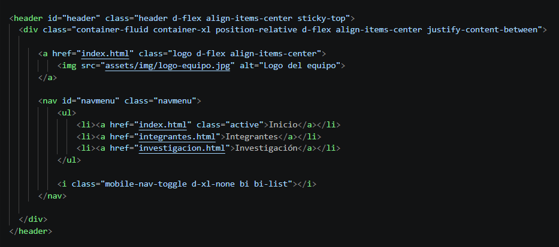
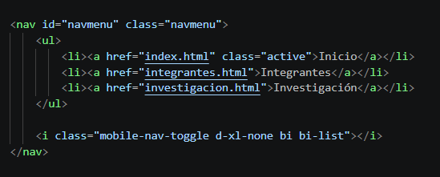
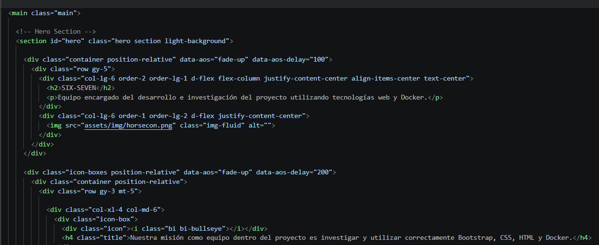
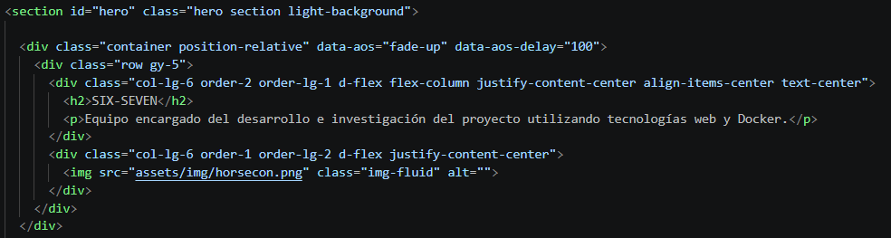
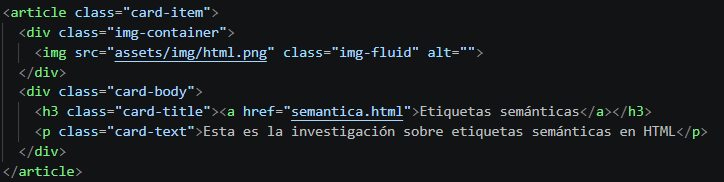
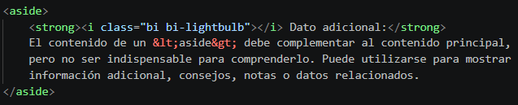

HTML
Etiquetas semánticas de HTML
¿Qué son las etiquetas semánticas?
Las etiquetas semánticas perimten organizar el contenido de una página HTML según la función que cumple cada sección.
<header>
La etiqueta <header> se utiliza para definir el encabezado de una página o de una sección. Puede contener elementos como títulos, logotipos y otros elementos relacionados con la introducción del contenido.
¿Cómo utilizamos <header> en SIX-SEVEN?
En nuestro proyecto, utilizamos la etiqueta <header> para estructurar el encabezado principal de nuestras páginas. En él se encuentra el logotipo del equipo y la barra de navegación, permitiendo identificar el sitio y facilitar el acceso a sus distintas secciones. En nuestro sitio web, el <header> contiene tanto el logotipo de SIX-SEVEN como el elemento <nav> utilizado para la navegación principal.

<nav>
La etiqueta <nav> se utiliza para definir una sección de navegación dentro de una página web. Generalmente contiene enlaces que permiten al usuario desplazarse hacia otras páginas o secciones del sitio.
¿Cómo utilizamos <nav> en SIX-SEVEN?
En nuestro sitio web, utilizamos la etiqueta <nav> para agrupar los enlaces que forman parte de la navegación principal. Esta se encuentra dentro del <header> y permite a los usuarios desplazarse entre las distintas páginas del sitio, como Inicio, Integrantes e Investigación.

<main>
La etiqueta <main> se utiliza para identificar el contenido principal de una página web. Dentro de ella se coloca la información central que constituye el propósito principal de la página.
¿Cómo utilizamos <main> en SIX-SEVEN?
En nuestro sitio web, utilizamos la etiqueta <main> para contener el contenido principal de cada página. Dentro de este elemento organizamos las diferentes secciones que presentan la información más importante del sitio, separándola de elementos como el encabezado y el pie de página.

<section>
La etiqueta <section> se utiliza para dividir el contenido de una página en secciones relacionadas entre sí. Cada sección puede agrupar contenido que pertenece a un mismo tema o propósito.
¿Cómo utilizamos <section> en SIX-SEVEN?
En nuestro sitio web, utilizamos la etiqueta <section> para organizar el contenido principal en diferentes grupos relacionados. Por ejemplo, dentro del <main> de nuestra página de inicio utilizamos una sección para presentar al equipo y otras secciones para organizar diferentes contenidos del sitio.

<article>
La etiqueta <article> se utiliza para representar un contenido independiente dentro de una página. Puede utilizarse para elementos como artículos, publicaciones, noticias o cualquier contenido que tenga sentido por sí mismo.
¿Cómo utilizamos <article> en SIX-SEVEN?
En nuestro sitio web, utilizamos la etiqueta <article> para representar cada investigación como un contenido independiente. En el índice de investigaciones, cada tarjeta contiene información sobre un tema específico y puede comprenderse de manera individual, por lo que resulta apropiado utilizar <article> para estructurar estas tarjetas.

<aside>
La etiqueta <aside> se utiliza para contener información relacionada con el contenido principal, pero que no forma parte directamente de este. Puede utilizarse para incluir información complementaria, enlaces, notas o contenido adicional.
¿Cómo utilizamos <aside> en SIX-SEVEN?
En nuestra investigación utilizamos la etiqueta <aside> para mostrar información complementaria relacionada con cada etiqueta HTML. Estos bloques contienen datos adicionales que ayudan a ampliar la información presentada, pero que no son necesarios para comprender la explicación principal.
.
<footer>
La etiqueta <footer> se utiliza para definir el pie de página de un documentoo de una sección. Puede contener información como derechos de autor, enlaces, datos de contacto u otra información relacionada con el contenido.